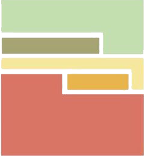

College of Engineering
Deanship of Graduate Studies

Developing a Life Cycle Cost Prediction Model for Green Residential Buildings in Saudi Arabia
Sarah Saleh Alqahtani
Clarification
Through this interactive page, you will be able to know the level of sustainability of the building by
answering several questions, then the result will appear at the end based on the total points, and at
the
top of the screen, the total cost will appear based on your choices.
Enjoy!
Enjoy!